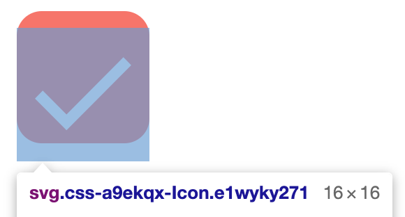
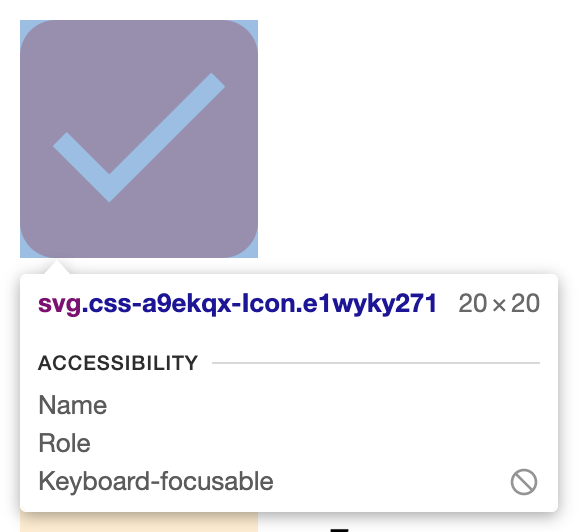

下記ブログを参考にしてアクセシビリティを維持したままCheckboxやRadioボタンを作ろうとしたのですが、特定のサイズ以下でずれる問題に遭遇しました。
Building a Checkbox Component with React and styled-components
以下がそのずれているときの画像です。16pxにしたとき親要素に対して少し下側にずれています。

しかし、20pxにしたときには以下のように親要素とぴったり揃います。

サイズによって変わるので割と謎だったのですが、調べてみるとtextの descender が原因だったようです。
inline要素は g や y といったベースラインより下に突き抜ける文字用のために下側のスペースを確保してしまうようで、それが原因でSVGが下側にずれていました。
原因がわかったので、上記の問題は line-height: 0; をSVGをラップしている要素に当て、 descender が確保されないようにすることで解決しました。